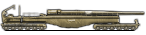
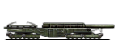

陆军单位
原页面：Land units
命名规则
游戏中使用的术语（例如团、旅）在不同国家的军队中历史上含义各不相同。本节说明这些术语在本游戏中的定义及其意义。
师
- 主条目：师
集团军由师组成，师是玩家能够直接控制的最小单位。
营
每个师由 1-25 个营组成——这些营有时也称为一线营。它们是主要的战斗力量，也是大多数统计数据的主要来源，同时是人力与装备的最大消耗方。
营的组别与团
所有营都属于某个特定分类或组别，例如「步兵营」「机动营」和「装甲营」。
团是师编制设计器中的「列」。属于不同组别的营必须放在不同的团（列）中。除此之外，团没有其他作用。而且，由于只有 5 个团（列）却有 3 个组别，这从来不会成为问题。无论如何，还有很多其他理由不去用满全部 25 个营位，或者混编超过 1-2 个营的组别。
支援连
除了营之外，一个师还可以编有最多 5 个支援连。它们往往提供无法通过其他途径获得的加成。支援连大致可分为 4 个非官方类别：
- 火炮，为那些无力编入一线火炮营的师提供有限的火炮科技树能力。
- 基础支援，只需要支援装备
- 摩托化支援，需要支援装备和一定数量的摩托化装备
- 侦察，可以是骑兵（步兵武器、支援装备）、摩托化（步兵武器、支援装备和摩托化装备）、装甲车或轻型坦克
统计数值
师的各种数值都基于其下属的营。最终数值的计算方式从简单相加（求和）、取平均值、取最差值，到「相当复杂」（装甲与穿透）不等。
请记住，某些数值还取决于实际投入使用的实际。师编制设计器只会假定使用了「最好」的装备。但考虑到装备的损失与缴获，以及相对于伤亡而言有限的产量，往往会有大量老旧装备被从库存中取出使用。虽然这能让每名士兵都有武器可用，却会大幅拉低数值。当然，对某些师来说，有意限制可用装备或许是明智之举，尤其是那些不在地图上作战的驻军师——对它们而言大多数装备属性都无关紧要。
这些属性大多可以通过建造并使用变体来提升，而在有 一步不退时还可以使用不同的坦克设计。不过要注意，提升某一项属性可能会对另一项属性产生不利影响。研究陆军学说也能提升属性，各种科技也能，而在有反抗暴政时某些特种部队学说同样可以。一些
一步不退时还可以使用不同的坦克设计。不过要注意，提升某一项属性可能会对另一项属性产生不利影响。研究陆军学说也能提升属性，各种科技也能，而在有反抗暴政时某些特种部队学说同样可以。一些 国策与政治顾问也能提升特定单位类型的属性。
国策与政治顾问也能提升特定单位类型的属性。
基础属性
- 最大速度。 师的行进速度取决于其速度最慢的最慢营。侦察部队等支援连也计入其中；如果你选择了速度缓慢的侦察连，整个师都会以该速度移动。某些其他支援连也会计入。
- 生命值。 「HP」是「hit points」（生命值）的缩写。它代表承受伤害的能力，很大程度上取决于人力和单位类型，也称为兵力。师的生命值代表该师在被物理摧毁之前能承受多少次命中或伤害。一个师的生命值越高，在承受相同伤害时损失的人力和装备就越少。当师的生命值受到损伤时，其战斗属性会按比例下降；例如，一个处于最大生命值一半的师在战斗中只能发挥其最大可能攻击或防御的一半。就承受伤害而言，坦克和战斗支援营往往相对脆弱，通常是步兵营和机动营（尤其是
 机械化）让师能够承受严重伤害而较少损失装备或人力。参见造成伤害。师的生命值为所有营和连生命值的总和。
机械化）让师能够承受严重伤害而较少损失装备或人力。参见造成伤害。师的生命值为所有营和连生命值的总和。 - 组织度。 组织度在之前的作品中被称为「士气」，它衡量的是一个师投入战斗的准备程度，也即一支部队继续进攻或继续守住其防守省份的意愿。一旦一支部队不再有任何组织度，它就无法继续参与战斗。步兵和机动营通常是师中组织度的主要来源，因此重要的是用足够数量的它们来缓冲坦克、战斗支援营等组织度较低的营，以保持师的作战能力。移动一个师会以每小时 -0.2[1] 组织度的速度造成组织度损失，组织度损失还会使移动速度最多降低 -80%。[2] 组织度也可能因消耗或补给不足而损失，见 组织度损失 和 补给不足惩罚）。一个没有组织度的师无法按预期运作；它既不能留在战斗中，也不能正常移动。师的组织度是所有营与连组织度的 平均值。战斗通常是组织度消耗的战斗（参考 造成伤害），并且取决于进攻方是谁，组织度降至 0 会产生两种效果之一：
- 如果它是进攻方，该师将停止进攻，并留在原地或返回出发地区。所有移动进度都会丢失。在组织度恢复到一定程度之前，无法再次命令它进攻。
- 如果它是防御方，该师会试图逃跑：撤出该省份前往最近的友方省份。如果无法撤出，它将被摧毁。
- 恢复速率。 所有未处于战斗中的师都会以固定速率恢复组织度。该属性是在此基础上额外恢复量，使师能为更多战斗做好更充分的准备。师若缺乏补给，会遭受恢复速率惩罚。参见补给不足惩罚。师的组织度恢复速率为所有营和连该项数值的平均值。
- 侦察。 在战斗中提供侦察能力。在任何战斗中，侦察能力优于敌方的一方（来自师和将领）能更好地掌握敌军部署情况，也更有可能在当天选出更好的战术（参见战斗战术）。编入侦察支援连会在战斗中为统率该师的指挥官提供额外的侦察点数加成。参见支援连科技。师的侦察值为所有营和连该项数值的总和。
- 镇压。 镇压当地抵抗的能力（参见占领）。即该师能在多大程度上阻止游击队力量的形成及其活动。师的该数值为所有营和连该项数值的总和，不过由于占领并不涉及已部署的师，实际上它更像是该师的加权平均（按
 生产花费和
生产花费和 人力加权）。
人力加权）。 - 重量。 单位有多大或有多「重」。数值越高，海运时需要的运输船队越多，空降需要的飞机也越多。师的该数值为所有营和连该项数值的总和。
- 补给消耗。 该单位每天消耗多少补给。关于其重要性请阅读「补给」章节。添加后勤支援连会降低师的每日补给消耗。参见支援连科技。该师的此项属性是全部营与连该项属性的总和。
- 可靠性。 可靠性指军用装备抵抗故障及随之而来的损失的能力。可靠性越高，装备因损耗而发生故障和损失的概率越低，战斗中回收损失装备的概率越高。参见装备回收和损耗与事故。为师编入
 维修连支援连（参见支援连科技）会为每种装备类型的可靠性提供加成。该数值是分别按师所使用的每种装备类型分别计算的。
维修连支援连（参见支援连科技）会为每种装备类型的可靠性提供加成。该数值是分别按师所使用的每种装备类型分别计算的。 - 伤员回收。 通常情况下，战斗中损失的人力就此消失。虽然人力池会回复到其上限，但速度非常慢。伤员回收是可从伤亡中挽救并送回人力池的那部分人力，能够节省人力。它主要由野战医院支援连提供，参见支援连科技。师的该数值为所有营和连该项数值的总和。
- 经验损失。 单位遭受伤亡时会损失多少经验。负值越大越好。野战医院支援连可以减少伤亡造成的经验损失。参见支援连科技。注意，补充兵员还会带来额外的经验损失。师的该数值为所有营和连该项数值的总和。
战斗属性
- 软攻。 每小时对敌方师软目标发起的攻击次数。在战斗中，该属性决定单位对低硬度目标（如步兵或骑兵）而非高硬度装甲目标（如坦克和坦克变体）能够发起的攻击次数。师的该数值为所有营和连该项数值的总和。
- 硬攻。 每小时对敌方师硬目标发起的攻击次数。在战斗中，该属性决定单位对高硬度目标（如坦克和装甲变体）能够发起的攻击次数。师的该数值为所有营和连该项数值的总和。
- 对空攻击。 单位对敌方飞机能造成多少伤害。它可以削弱敌方飞机攻击你所在师的效能（即击落敌机的能力）。高对空攻击也有助于抵消敌方的制空权效果。师的该数值为所有营和连该项数值的总和。
- 防御。 在以前的游戏中被称为「防御力」。该属性代表师在防御省份时拥有的防御次数，也就是它能规避多少次攻击。当一个师不再剩余防御次数时，它在战斗中更容易被命中，也更难以守住防御阵地。防御越高，师就能以更少的伤亡更久地守住战线。师的该数值为所有营和连该项数值的总和。
- 突破。 在以前的游戏中被称为「韧性」。它的作用与防御相同，只是在师进攻省份时生效。该属性代表师在进攻时拥有的防御次数，也就是它能规避防御方多少次攻击。当师不再剩余防御次数时，它在战斗中更容易被命中，也更难以维持攻势。突破越高，师就能更有效地持续进攻战线。师的该数值为所有营和连该项数值的总和。
- 装甲。 若进攻方的穿透低于防御方的装甲，则减少对该师发起的软攻和硬攻次数，若穿透低于-50%则该减益最多可达50%。[3]装甲高于敌方穿透还会增加战斗中单位的攻击次数，并将每次攻击的组织度伤害骰从 1d4 变为 1d6[4]，因为单位可以更自由地在战场上机动，不易被压制或击伤。师的装甲值等于40%的师内最高值装甲加上 60% 的师内平均值装甲。[5]装甲不是单位类型的属性，而只是其装备的属性。
- 穿透。 代表一个师穿透装甲并压制装甲部队、限制其移动的能力。如果该数值高于敌方的装甲值，则该师的伤害不受惩罚，也不会承受额外的组织度伤害。否则，该师造成-20%伤害（穿透至少为75%时），造成-35%伤害（穿透至少为50%时），其他情况造成-50%伤害。[3]师的穿透值等于师内40%穿透的最高值加上师内所有营和连平均值穿透的 60%。[6]
- 主动性。 主动性越高，作战计划制定得越快，因此 20% 的主动性（例如来自 1 级通信连）会把 2%/天的计划速度提升到 2.4%/天。主动性越高，师从预备队加入战斗的概率也越大，每 1% 主动性会使增援率提高 0.25%。[7]师的该数值为所有营和连该项数值的总和。
- 构筑工事。 表示一个单位建造临时防御工事（如战壕）以及选择有利防御位置（如丘陵）以更好地抵御敌方进攻的能力。工事等级会在陆军选择界面中显示。工事会同时影响师的攻击与防御属性。师在未交战且静止（不移动）时每天都会累积工事。师在进攻时会失去全部工事，使用试探性攻击能力时例外（参见：指挥点数）。它在防御省份时提供巨大加成，甚至能达到成倍的兵力倍增效果。该师的此项属性是全部营与连该项属性的总和。
- 战斗宽度。 表示师在前线作战时占用的空间。为了能够投入战斗，师必须能够容纳进战场提供的战斗宽度之中。每个师占用的宽度越少，能够同时向敌人开火的师就越多。不过，编制大量薄弱的师也有其代价。不同营类型对师战斗宽度的增加量各不相同。例如，步兵与装甲营占用 2 宽度，炮兵营占用 3 宽度，反坦克与防空营占用 1 宽度。支援连不会增加师的战斗宽度（详见师）。「大规模突击」陆军学说 树中有可减少 步兵 营战斗宽度的选项，而拥有
 反抗暴政 的山地兵特种部队学说树中则有可减少 山地兵 营战斗宽度的选项。师的战斗宽度是所有营战斗宽度的
反抗暴政 的山地兵特种部队学说树中则有可减少 山地兵 营战斗宽度的选项。师的战斗宽度是所有营战斗宽度的  总和。战斗宽度说明：
总和。战斗宽度说明：
- 硬度。 代表师中由经过硬化防护的营所占的比例，也就是该师有多「硬」。它决定了来袭单位对该师发起的硬攻与软攻之间的比例。硬度较高的单位承受的软攻更少、硬攻更多，而硬度较低的单位承受的软攻更多、硬攻更少。不同的营硬度不同。例如，步兵非常软（0%），
 摩托化步兵稍硬一些（20%），机械化相当硬（60-75%），
摩托化步兵稍硬一些（20%），机械化相当硬（60-75%）， 中型坦克很硬（90%），而超重型坦克最硬（100%）。将硬度乘以进攻方的硬攻，将 1 - 硬度（即软度）乘以进攻方的软攻，即可得出对该师发起的各类攻击次数。硬度高的师会承受更多指向它的硬攻和更少的软攻。师的硬度为所有一线营该项数值的平均值，但不包括支援连。
中型坦克很硬（90%），而超重型坦克最硬（100%）。将硬度乘以进攻方的硬攻，将 1 - 硬度（即软度）乘以进攻方的软攻，即可得出对该师发起的各类攻击次数。硬度高的师会承受更多指向它的硬攻和更少的软攻。师的硬度为所有一线营该项数值的平均值，但不包括支援连。
其他统计数值
 燃料 容量：单位能储存多少燃料。燃料容量越高，单位在燃料补给不足时就能越久地保持全力运作。大多数消耗燃料的单位会将其 96[8]小时的燃料消耗量加入师的燃料容量，不过也有办法提高这一数值。师的该数值为所有营和连该项数值的总和。
燃料 容量：单位能储存多少燃料。燃料容量越高，单位在燃料补给不足时就能越久地保持全力运作。大多数消耗燃料的单位会将其 96[8]小时的燃料消耗量加入师的燃料容量，不过也有办法提高这一数值。师的该数值为所有营和连该项数值的总和。- 燃油消耗：一个单位在运作期间消耗多少燃油。有燃油消耗的陆军单位在移动、交战或训练时都会消耗燃油。燃油不足的师只能在补给充足的省份加油。使用后勤连支援连可以降低师的燃油消耗。该师的此项属性是全部营与连该项属性的
 总和，不过有些支援连尽管需要通常消耗燃油的装备，却不会增加燃油消耗。
总和，不过有些支援连尽管需要通常消耗燃油的装备，却不会增加燃油消耗。 - 空降：一个简单的真假判定，用于检查该师能否空降。要使其为真，所有一线营都必须是伞兵。不过大多数支援连都可以自由混编。

- 特种部队上限：一个国家能够投入的特种部队营数量，取决于其已部署的非特种部队营总数。如果改动、训练、更换师编制或调整师编制会导致超出该上限，就无法进行。参见特种部队。
装备花费
每个师都需要一定数量的 人力、装备和训练时间来生产。这些数值大多是简单的总和，训练时间除外——它取决于该师中任一营或连最长的最长训练时间。参见训练和演习。
人力、装备和训练时间来生产。这些数值大多是简单的总和，训练时间除外——它取决于该师中任一营或连最长的最长训练时间。参见训练和演习。
地形修正
- 主条目：地形
地形会影响不同单位类型在进攻、防御乃至移动方面的表现。地形修正是在所有营之间取平均的，而支援连的同类修正则是相加的。
单位类型
注意：下表并不完全准确。下表是按第一代装备编制的。后续世代的详细信息可在陆军单位（按兵种）中查到，同代装备之间的对比则见陆军单位（按年份）。一般来说，非战斗统计数值按营定义，而战斗统计数值是装备的函数，因此并非固定不变。此外，营还会为其装备添加修正。例如，海军陆战营为其步兵装备增加 +30% 突破，而火炮支援连则为其火炮装备带来 -40% 软攻、-40% 硬攻、-40% 防御和 -40% 突破。如果一个营使用多种装备，其属性为所用全部装备之和。例如，机械化营同时使用武器和机械化装备（武器软攻获得 10% 加成，武器硬攻获得 500% 加成）。支援装备不提供任何战斗属性。
大多数陆军单位营都可以放在旅列中，通常被称为一线营。而需要放在支援列的营则称为支援连。更多细节参见师编制设计器。
步兵营
| 单位 | 图标 | 北约符号 | 基础 | 花费 | 装备修正 | 类别 | 装备属性（多数基础装备，进阶版本见此处：装备/陆军单位（按年份）） | 单位 | ||||||||||||||||||||
|---|---|---|---|---|---|---|---|---|---|---|---|---|---|---|---|---|---|---|---|---|---|---|---|---|---|---|---|---|
| HP | 组织度 | 恢复率 | 镇压 | 重量 | 补给 | 宽度 | 特殊效果 | 训练 | 装备 | 速度 | 软攻 | 硬攻 | 对空攻击 | 防御 | 突破 | 装甲 | 穿透 | 硬度 | 燃料容量 | 燃料消耗 | 生产花费 | |||||||
| 步兵 | +25.0 | 60 | 0.3 | +1.5 | +0.5 | +0.06 | +2.0 | 1000 | 90 | 100 步兵装备 | 前线、步行步兵、所有步兵、全军 | 4.0 | +3.0 | +0.5 | +20.0 | +2.0 | 1 | 0% | 0 | 0 | +43.0 | 步兵 | ||||||
| 自行车[9] | +25.0 | 60 | 0.3 | +2.0 | +0.5 | +0.06 | +2.0 | 在部分地形上的移动方式改变 | 1000 | 90 | 100 步兵装备、10 支援装备 | +60% 最大速度 | 前线、步行步兵、所有步兵、全军 | 6.4 | +3.0 | +0.5 | +20.0 | +2.0 | 1 | 0% | 0 | 0 | +83.0 | 自行车营 | ||||
| 惩戒营[10] | +15.0 | 70 | 0.4 | +0.5 | +0.5 | +0.05 | +2.0 | 850 | 50 | 85 步兵装备 | 前线、步行步兵、所有步兵、全军 | 4.0 | +3.0 | +0.5 | +20.0 | +2.0 | 1 | 0% | 0 | 0 | +36.55 | 惩戒营 | ||||||
| 非正规步兵 | +30.0 | 45 | 0.2 | +1.5 | +0.5 | +0.04 | +2.0 | 1000 | 30 | 80 步兵装备 | -5% 软攻、-15% 防御 | 前线、步行步兵、所有步兵、全军 | 4.0 | +2.85 | +0.5 | +17.0 | +2.0 | 1 | 0% | 0 | 0 | +34.4 | 非正规步兵 | |||||
| 民兵 | +25.0 | 50 | 0.3 | +1.5 | +0.5 | +0.06 | +2.0 | 1000 | 80 | 100 步兵装备 | 前线、步行步兵、所有步兵、全军、民兵 | 4.0 | +3 | +0.5 | +20.0 | +2.0 | 1 | 0% | 0 | 0 | +43.0 | 民兵 | ||||||
| 山地兵 | +20.0 | 70 | 0.4 | +1.0 | +0.5 | +0.05 | +2.0 | 各种崎岖地形加成 | 1000 | 120 | 140 步兵装备 | +30% 突破 | 前线、步行步兵、所有步兵、全军、特种部队、所有山地兵、特种部队步行步兵 | 4.0 | +3.0 | +0.5 | +20.0 | +2.6 | 1 | 0% | 0 | 0 | +60.2 | 山地兵 | ||||
| 海军陆战队 | +20.0 | 70 | 0.4 | +1.0 | +0.5 | +0.05 | +2.0 | 各种潮湿地形加成 | 1000 | 120 | 150 步兵装备 | +30% 突破 | 前线、步行步兵、所有步兵、全军、特种部队、所有海军陆战队、特种部队步行步兵 | 4.0 | +3.0 | +0.5 | +20.0 | +2.6 | 1 | 0% | 0 | 0 | +64.5 | 海军陆战队 | ||||
| 海军陆战突击队 | +20.0 | 70 | 0.4 | +1.0 | +0.5 | +0.05 | +2.0 | 各种潮湿地形加成 | 1000 | 120 | 150 步兵装备 | +30% 突破 | 前线、步行步兵、所有步兵、全军、特种部队、所有海军陆战队、特种部队步行步兵 | 4.0 | +3.0 | +0.5 | +20.0 | +2.6 | 1 | 0% | 0 | 0 | +64.5 | 海军陆战突击队 | ||||
| 伞兵 | +22.0 | 70 | 0.4 | +1.0 | +0.5 | +0.05 | +2.0 | 可以空降 | 1000 | 150 | 130 步兵装备 | 前线、步行步兵、所有步兵、全军、特种部队、所有伞兵、特种部队步行步兵 | 4.0 | +3.0 | +0.5 | +20.0 | +2.0 | 1 | 0% | 0 | 0 | +55.9 | 伞兵 | |||||
| 游骑兵 | +20.0 | 70 | 0.4 | +1.0 | +0.5 | +0.05 | +2.0 | 各种茂密植被地形加成 | 1000 | 120 | 140 步兵装备 | 前线、步行步兵、所有步兵、全军、特种部队、所有游骑兵、特种部队步行步兵 | 4.0 | +3.0 | +0.5 | +20.0 | +2.6 | 1 | 0% | 0 | 0 | +60.2 | 游骑兵 | |||||
机动营
| 单位 | 图标 | 北约符号 | 基础 | 花费 | 装备修正 | 类别 | 装备属性（多数基础装备，进阶版本见此处：装备/陆军单位（按年份）） | 单位 | ||||||||||||||||||||
|---|---|---|---|---|---|---|---|---|---|---|---|---|---|---|---|---|---|---|---|---|---|---|---|---|---|---|---|---|
| HP | 组织度 | 恢复率 | 镇压 | 重量 | 补给 | 宽度 | 特殊效果 | 训练 | 装备 | 速度 | 软攻 | 硬攻 | 对空攻击 | 防御 | 突破 | 装甲 | 穿透 | 硬度 | 燃料容量 | 燃料消耗 | 生产花费 | |||||||
| 骑兵 | +25.0 | 70 | 0.3 | +2.0 | +0.5 | +0.06 | +2.0 | 各种地形攻击惩罚 | 1000 | 120 | 120 步兵装备 | +60% 最大速度 | 前线、全军 | 6.4 | +3.0 | +0.5 | +20.0 | +2.0 | 1 | 0% | 0 | 0 | +51.6 | 骑兵 | ||||
| 骆驼骑兵[11] | +30.0 | 70 | 0.3 | +2.0 | +0.6 | +0.10 | +2.0 | 各种地形攻击惩罚、 |
1000 | 160 | 150 步兵装备 | +40% 最大速度 | 前线、全军 | 5.6 | +6.0 | +1.0 | +22.0 | +3.0 | 4 | 0% | 0 | 0 | +64.5 | 骆驼骑兵 | ||||
| 战象部队[12] | +30.0 | 55 | 0.25 | +2.3 | +1.2 | +0.12 | +2.0 | 各种地形修正 | 1100 | 210 | 260 步兵装备、30 火炮 | +50% 最大速度 -25% 软攻 -15% 硬攻 +30% 突破 |
前线、全军 | 6 | +23.2 | +2.5 | +32.0 | +11.7 | 9 | 0% | 0 | 0 | +235.0 | 战象骑兵 | ||||
| 摩托化步兵 | +25.0 | 60 | 0.3 | +2.2 | +0.75 | +0.065 | +2.0 | 各种地形惩罚 | 1200 | 90 | 100 步兵装备、35 摩托化装备（卡车） | 前线、所有步兵、全军 | 12.0 | +3.0 | +0.5 | +20.0 | +7.0 | 1 | 10% | 57.6 | 1.20 | +130.5 | 摩托化步兵 | |||||
| 机械化步兵 | +30.0 | 60 | 0.3 | +2.0 | +1.0 | +0.14 | +2.0 | 各种地形惩罚 | 1200 | 120 | 100 步兵装备、40 机械化装备 | +10% 软攻 +400% 硬攻 |
前线、所有步兵、全军 | 8.0 | +3.3 | +2.5 | +46.0 | +8.0 | 10 | 12 | 60% | 115.2 | 2.40 | +363.0 | 机械化步兵 | |||
| 两栖履带车营 | +30.0 | 60 | 0.3 | +1.0 | +1.0 | +0.18 | +2.0 | 各种地形惩罚、潮湿地形加成 | 1200 | 120 | 100 步兵装备、50 两栖履带车 | +10% 软攻 +50% 硬攻 |
前线、所有步兵、全军 | 7.0 | +3.3 | +0.75 | +46.0 | +6.0 | 10 | 12 | 60% | 192.0 | 4.0 | +450.0 | 两栖履带车营 | |||
| 装甲车 | +5.0 | 20 | 0.3 | +2.5 | +0.8 | +0.14 | +2.0 | 各种地形惩罚与移动加成 | 500 | 180 | 60 装甲车 | 前线、全军 | 9.0 | +6.0 | +2.0 | +2.0 | +12.0 | 3 | 6 | 65% | 38.40 | 0.8 | +210.0 | 装甲车 | ||||
战斗支援营
| 单位 | 图标 | 北约符号 | 基础 | 花费 | 装备修正 | 类别 | 装备属性（多数基础装备，进阶版本见此处：装备/陆军单位（按年份）） | 单位 | ||||||||||||||||||||
|---|---|---|---|---|---|---|---|---|---|---|---|---|---|---|---|---|---|---|---|---|---|---|---|---|---|---|---|---|
| HP | 组织度 | 恢复率 | 镇压 | 重量 | 补给 | 宽度 | 特殊效果 | 训练 | 装备 | 速度 | 软攻 | 硬攻 | 对空攻击 | 防御 | 突破 | 装甲 | 穿透 | 硬度 | 燃料容量 | 燃料消耗 | 生产花费 | |||||||
| 反坦克炮 | +0.6 | 0 | +0.5 | +0.10 | +1.0 | 各种地形惩罚 | 500 | 120 | 36 反坦克炮 | 前线、一线火炮、全军 | 4.0 | +4.0 | +20.0 | +4.0 | 60.0 | 0% | 0 | 0 | +144.0 | 反坦克炮 | ||||||||
| 防空炮 | +0.6 | 0 | 0.1 | +0.5 | +0.10 | +1.0 | 各种地形惩罚 | 500 | 120 | 36 防空炮 | 一线火炮、全军 | 4.0 | +3.0 | +7.0 | +19.0 | +4.0 | +1.0 | 25 | 0% | 0 | 0 | +144.0 | 防空炮 | |||||
| 火炮 | +0.6 | 0 | 0.1 | +0.5 | +0.21 | +3.0 | 各种地形惩罚 | 500 | 120 | 24 火炮 | 一线火炮、火炮、全军 | 4.0 | +25 | +2.0 | +10.0 | +6.0 | 5 | 0% | 0 | 0 | +84.0 | 火炮 | ||||||
| 火箭炮 | +0.6 | 0 | 0.1 | +0.5 | +0.22 | +3.0 | 各种地形惩罚 | 500 | 120 | 24 火箭炮 | 一线火炮、全军 | 4.0 | +30.0 | +1.0 | +12.0 | +9.0 | 2 | 0% | 0 | 0 | +96.0 | 火箭炮 | ||||||
机动战斗支援营
| 单位 | 图标 | 北约符号 | 基础 | 花费 | 装备修正 | 类别 | 装备属性（多数基础装备，进阶版本见此处：装备/陆军单位（按年份）） | 单位 | ||||||||||||||||||||
|---|---|---|---|---|---|---|---|---|---|---|---|---|---|---|---|---|---|---|---|---|---|---|---|---|---|---|---|---|
| HP | 组织度 | 恢复率 | 镇压 | 重量 | 补给 | 宽度 | 特殊效果 | 训练 | 装备 | 速度 | 软攻 | 硬攻 | 对空攻击 | 防御 | 突破 | 装甲 | 穿透 | 硬度 | 燃料容量 | 燃料消耗 | 生产花费 | |||||||
| 摩托化反坦克炮营 | +0.6 | 0 | +0.5 | +0.15 | +1.0 | 各种地形惩罚 | 500 | 120 | 36 反坦克炮、36 摩托化装备（卡车） | 一线火炮、全军 | 12.0 | +4.0 | +20.0 | +4.0 | +5.0 | 60.0 | 20% | 57.6 | 1.20 | +234.0 | 摩托化反坦克炮营 | |||||||
| 摩托化防空炮营 | +0.6 | 0 | 0.1 | +0.5 | +0.15 | +1.0 | 各种地形惩罚 | 500 | 120 | 36 防空炮、36 摩托化装备（卡车） | 一线火炮、全军 | 12.0 | +3.0 | +7.0 | +19.0 | +4.0 | +6.0 | 25 | 10% | 57.6 | 1.20 | +234.0 | 摩托化防空炮营 | |||||
| 摩托化火炮营 | +0.6 | 0 | 0.1 | +0.5 | +0.25 | +3.0 | 各种地形惩罚 | 500 | 120 | 24 火炮、36 摩托化装备（卡车） | 一线火炮、全军 | 12.0 | +25.0 | +2.0 | +10.0 | +11.0 | 5 | 10% | 57.6 | 1.20 | +174.0 | 摩托化火炮营 | ||||||
| 卡车牵引火箭炮营 | +0.6 | 0 | 0.1 | +0.5 | +0.25 | +3.0 | 各种地形惩罚 | 500 | 120 | 24 火箭炮、36 摩托化装备（卡车） | 一线火炮、全军 | 12.0 | +30.0 | +1.0 | +12.0 | +14.0 | 2 | 10% | 57.6 | 1.2 | +186.0 | 卡车牵引火箭炮营 | ||||||
| 摩托化火箭炮营 | +0.6 | 0 | 0.1 | +0.5 | +0.25 | +3.0 | 各种地形惩罚 | 500 | 120 | 16 摩托化火箭炮、16 摩托化装备（卡车） | 一线火炮、全军 | 12.0 | +36.0 | +1.0 | +15.0 | +17.0 | 2 | 10% | 115.2 | 2.40 | +232 | 摩托化火箭炮营 | ||||||
装甲营
此处给出的装甲营装备属性是在没有 一步不退的情况下的数值，此时装甲车辆与其他单位一样拥有预先设定的属性，也可以用变体改装成
一步不退的情况下的数值，此时装甲车辆与其他单位一样拥有预先设定的属性，也可以用变体改装成 陆军经验。而在有
陆军经验。而在有 一步不退时，装甲车辆则改为通过坦克设计商获得其属性。
一步不退时，装甲车辆则改为通过坦克设计商获得其属性。
| 单位 | 图标 | 北约符号 | 基础 | 花费 | 装备修正 | 类别 | 装备属性（多数基础装备，进阶版本见此处：装备/陆军单位（按年份）） | 单位 | ||||||||||||||||||||
|---|---|---|---|---|---|---|---|---|---|---|---|---|---|---|---|---|---|---|---|---|---|---|---|---|---|---|---|---|
| HP | 组织度 | 恢复率 | 镇压 | 重量 | 补给 | 宽度 | 特殊效果 | 训练 | 装备 | 速度 | 软攻 | 硬攻 | 对空攻击 | 防御 | 突破 | 装甲 | 穿透 | 硬度 | 燃料容量 | 燃料消耗 | 生产花费 | |||||||
| 轻型坦克 | +2.0 | 10 | 0.3 | 2.5 | +1.0 | +0.22 | +2.0 | 各种地形惩罚 | 500 | 180 | 60 轻型坦克 | +15% 突破 | 坦克、前线、所有装甲、全军 | 10/12/14 | +13 | +4 | +4 | +29.9 | 10 | 10 | 80% | 115.2 | 2.4 | +480 | 轻型坦克 | |||
| 中型坦克 | +2.0 | 10 | 0.3 | 2.5 | +1.25 | +0.25 | +2.0 | 各种地形惩罚 | 500 | 180 | 50 中型坦克 | 坦克、前线、所有装甲、全军 | 8/9/10 | +19 | +14 | +5 | +41.4 | 60 | 61 | 90% | 172.8 | 3.6 | +600 | 中型坦克 | ||||
| 重型坦克 | +2.0 | 10 | 0.3 | 2.5 | +1.5 | +0.32 | +2.0 | 各种地形惩罚 | 500 | 180 | 40 重型坦克 | 坦克、前线、所有装甲、全军 | 5/6/6 | +15 | +12 | +6 | +41.4 | 70 | 35 | 95% | 211.2 | 4.4 | +1000 | 重型坦克 | ||||
| 现代坦克 | +2.0 | 10 | 0.3 | 2.5 | +1.5 | +0.25 | +2.0 | 各种地形惩罚 | 500 | 180 | 50 现代坦克 | 坦克、前线、所有装甲、全军 | 10 | +40 | +32 | +10 | +96.6 | 130 | 131 | 98% | 240 | 5 | +1400 | 现代坦克 | ||||
| 两栖坦克营 | +2.0 | 10 | 0.3 | +1.0 | +0.20 | +2.0 | 各种地形惩罚、潮湿地形加成 | 500 | 180 | 50 两栖坦克 | 坦克、前线、所有装甲、全军、两栖装甲 | 7 | +13 | +4 | +4 | +26 | 20 | 10 | 80% | 192 | 4 | +500 | 两栖坦克营 | |||||
| 轻型两栖坦克营 | +2.0 | 10 | 0.3 | +1.0 | +0.20 | +2.0 | 500 | 180 | 50 轻型两栖坦克 | 前线、坦克、所有装甲、全军 | 没有 |
轻型两栖坦克营 | ||||||||||||||||
| 中型两栖坦克营 | +2.0 | 10 | 0.3 | +1.0 | +0.20 | +2.0 | 500 | 180 | 50 中型两栖坦克 | 前线、坦克、所有装甲、全军 | 没有 |
中型两栖坦克营 | ||||||||||||||||
| 重型两栖坦克营 | +2.0 | 10 | 0.3 | +1.0 | +0.20 | +2.0 | 500 | 180 | 50 重型两栖坦克 | 前线、坦克、所有装甲、全军 | 没有 |
重型两栖坦克营 | ||||||||||||||||
装甲战斗支援营
此处给出的装甲战斗支援营装备属性是在没有 一步不退的情况下的数值，此时装甲车辆与其他单位一样拥有预先设定的属性，也可以用变体改装成
一步不退的情况下的数值，此时装甲车辆与其他单位一样拥有预先设定的属性，也可以用变体改装成 陆军经验。而在有
陆军经验。而在有 一步不退时，装甲车辆则改为通过坦克设计商获得其属性。
一步不退时，装甲车辆则改为通过坦克设计商获得其属性。
| 单位 | 图标 | 北约符号 | 基础 | 花费 | 装备修正 | 类别 | 装备属性（多数基础装备，进阶版本见此处：装备/陆军单位（按年份）） | 单位 | ||||||||||||||||||||
|---|---|---|---|---|---|---|---|---|---|---|---|---|---|---|---|---|---|---|---|---|---|---|---|---|---|---|---|---|
| HP | 组织度 | 恢复率 | 镇压 | 重量 | 补给 | 宽度 | 特殊效果 | 训练 | 装备 | 速度 | 软攻 | 硬攻 | 对空攻击 | 防御 | 突破 | 装甲 | 穿透 | 硬度 | 燃料容量 | 燃料消耗 | 生产花费 | |||||||
| 轻型坦克歼击车 | +0.6 | 0 | 0.3 | 1.0 | +1.0 | +0.20 | +2.0 | 各种地形惩罚 | 500 | 180 | 40 轻型坦克歼击车 | -42% 突破 +15% 穿透 |
前线、所有装甲、全军 | 10.0/12.0/14.0 | +6.0 | +10.0 | +4.0 | +0.5 | 10 | 57.5 | 80% | 57.6 | 1.20 | +320.0 | 轻型坦克歼击车 | |||
| 中型坦克歼击车 | +0.6 | 0 | 0.3 | 1.25 | +1.25 | +0.22 | +2.0 | 各种地形惩罚 | 500 | 180 | 40 中型坦克歼击车 | -25% 突破 +15% 穿透 |
前线、所有装甲、全军 | 8.0/9.0/10.0 | +5.0 | +20.0 | +5.0 | +0.9 | 60 | 101.2 | 90% | 86.4 | 1.80 | +480.0 | 中型坦克歼击车 | |||
| 重型坦克歼击车 | +0.6 | 0 | 0.3 | 1.25 | +1.5 | +0.30 | +2.0 | 各种地形惩罚 | 500 | 180 | 40 重型坦克歼击车 | 前线、所有装甲、全军 | 5.0/6.0/6.0 | +6.0 | +25.0 | +4.0 | +0.7 | 70 | 110.4 | 95% | 105.6 | 2.20 | +1000.0 | 重型坦克歼击车 | ||||
| 现代坦克歼击车 | +0.6 | 0 | 0.3 | 1.25 | +1.5 | +0.25 | +2.0 | 各种地形惩罚 | 500 | 180 | 40 现代坦克歼击车 | 前线、所有装甲、全军 | 10 | +10.0 | +42.0 | +8.0 | +1.5 | 130 | 189.7 | 98% | 120.00 | 2.50 | +1120.0 | 现代坦克歼击车 | ||||
| 轻型自行火炮 | +0.6 | 0 | 0.1 | 1.25 | +1.0 | +0.42 | +2.0 | 各种地形惩罚 | 500 | 180 | 40 轻型自行火炮 | -42% 突破 +15% 软攻 |
所有装甲、全军 | 10.0/12.0/14.0 | +39.1 | +0.5 | +4.0 | +1.1 | 5 | 4 | 50% | 57.6 | 1.20 | +320.0 | 轻型自行火炮 | |||
| 中型自行火炮 | +0.6 | 0 | 0.1 | 1.5 | +1.25 | +0.46 | +2.0 | 各种地形惩罚 | 500 | 180 | 40 中型自行火炮 | -25% 突破 +15% 软攻 |
所有装甲、全军 | 8.0/9.0/10.0 | +48.3 | +1.0 | +5.0 | +2.2 | 45 | 5 | 65% | 86.4 | 1.80 | +480.0 | 中型自行火炮 | |||
| 重型自行火炮 | +0.6 | 0 | 0.1 | 1.5 | +1.5 | +0.60 | +2.0 | 各种地形惩罚 | 500 | 180 | 40 重型自行火炮 | 所有装甲、全军 | 5.0/6.0/6.0 | +63.2 | +1.0 | +4.0 | +1.5 | 45 | 8 | 80% | 105.5 | 2.20 | +1000.0 | 重型自行火炮 | ||||
| 现代自行火炮 | +0.6 | 0 | 0.1 | 1.5 | +1.5 | +0.50 | +2.0 | 各种地形惩罚 | 500 | 180 | 40 现代自行火炮 | 所有装甲、全军 | 10 | +92.0 | +3.0 | +8.0 | +3.0 | 90 | 10 | 85% | 120.00 | 2.50 | +1120.0 | 现代自行火炮 | ||||
| 轻型自行防空炮 | +0.6 | 0 | 0.1 | 0.75 | +1.0 | +0.10 | +2.0 | 各种地形惩罚 | 500 | 180 | 40 轻型自行防空炮 | -55% 突破 +15% 对空攻击 |
所有装甲、全军 | 10.0/12.0/14.0 | +2.0 | +1.0 | +17.2 | +2.0 | +0.9 | 5 | 5 | 50% | 28.8 | 0.60 | +400.0 | 轻型自行防空炮 | ||
| 中型自行防空炮 | +0.6 | 0 | 0.1 | 0.8 | +1.25 | +0.10 | +2.0 | 各种地形惩罚 | 500 | 180 | 40 中型自行防空炮 | -53% 突破 +15% 对空攻击 |
所有装甲、全军 | 8.0/9.0/10.0 | +4.5 | +3.0 | +25.3 | +2.5 | +1.1 | 45 | 40 | 65% | 43.2 | 0.90 | +480.0 | 中型自行防空炮 | ||
| 重型自行防空炮 | +0.6 | 0 | 0.1 | 0.75 | +1.5 | +0.10 | +2.0 | 各种地形惩罚 | 500 | 180 | 40 重型自行防空炮 | -35% 突破 +15% 对空攻击 |
所有装甲、全军 | 5.0/6.0/6.0 | +4.5 | +4.0 | +19.5 | +2.0 | +1.3 | 45 | 25 | 80% | 52.8 | 1.10 | +1000.0 | 重型自行防空炮 | ||
| 现代自行防空炮 | +0.6 | 0 | 0.1 | 2.0[13] | +1.5 | +0.10 | +2.0 | 各种地形惩罚 | 500 | 180 | 40 现代自行防空炮 | -53% 突破 +15% 对空攻击 |
所有装甲、全军 | 10 | +9.0 | +7.5 | +57.5 | +4.0 | +1.8 | 90 | 100 | 85% | 60.00 | 1.25 | +1120.0 | 现代自行防空炮 | ||
支援连
支援连通常没有战斗宽度、不影响师的速度，且除非另有说明都可以空降。与一线营不同，每个支援连在一个师中只能添加一次。有些支援连还会阻止其他某些支援连被选用。
此处给出的含装甲单位的支援连装备属性是在没有 一步不退的情况下的数值，此时装甲车辆与其他单位一样拥有预先设定的属性，也可以用变体改装成
一步不退的情况下的数值，此时装甲车辆与其他单位一样拥有预先设定的属性，也可以用变体改装成 陆军经验。而在有
陆军经验。而在有 一步不退时，装甲车辆则改为通过坦克设计商获得其属性。
一步不退时，装甲车辆则改为通过坦克设计商获得其属性。
| 单位 | 图标 | 北约符号 | 基础 | 花费 | 装备修正 | 类别 | 装备属性（多数基础装备，进阶版本见此处：装备/陆军单位（按年份）） | 单位 | |||||||||||||||||||
|---|---|---|---|---|---|---|---|---|---|---|---|---|---|---|---|---|---|---|---|---|---|---|---|---|---|---|---|
| HP | 组织度 | 恢复率 | 镇压 | 重量 | 补给 | 特殊效果 | 训练 | 装备 | 速度 | 软攻 | 硬攻 | 对空攻击 | 防御 | 突破 | 装甲 | 穿透 | 硬度 | 燃料容量 | 燃料消耗 | 生产花费 | |||||||
| 支援反坦克连 | +0.2 | 0 | -0.1 | +0.1 | +0.08 | 300 | 120 | 24 反坦克炮 | -50% 软攻、硬攻、防御与突破 -15% 穿透 |
前线、支援、全军 | +2.0 | +10.0 | +2.0 | 51.0 | 0 | 0 | +96.0 | 支援反坦克连 | |||||||||
| 支援防空连 | +0.2 | 0 | -0.1 | +0.1 | +0.10 | 300 | 120 | 20 防空炮 | -40% 软攻、硬攻、防御与突破 -20% 对空攻击 |
支援、全军 | +1.8 | +4.2 | +15.2 | +2.4 | +0.6 | 25 | 0 | 0 | +80.0 | 支援防空连 | |||||||
| 支援火炮连 | +0.2 | 0 | 0.1 | +0.1 | +0.16 | 300 | 120 | 12 火炮 | -40% 软攻、硬攻、防御与突破 | 支援、火炮、支援火炮、全军 | +15.0 | +1.2 | +6.0 | +3.6 | 5 | 0 | 0 | +42.0 | 支援火炮连 | ||||||||
| 支援火箭炮连 | +0.2 | 0 | 0.1 | +0.1 | +0.16 | 300 | 120 | 12 火箭炮 | -50% 软攻、硬攻、防御与突破 | 支援、火炮、支援火炮、全军 | +15.0 | +0.5 | +6.0 | +4.5 | 2 | 0 | 0 | +48.0 | 支援火箭炮连 | ||||||||
| 超重型火炮 | +0.2 | 0 | 0.1 | +0.1 | +0.25 | 无法空降，速度影响师 | 1000 | 180 | 3 超重型榴弹炮 | 支援、火炮、支援火炮、全军 | 4.0 | +35.0 | +4.0 | +12.0 | +12.0 | 7 | 12 | 0.25 | +135.0 | 超重型火炮 | |||||||
| 自行超重型火炮 | +0.2 | 0 | 0.1 | +0.1 | +0.35 | 无法空降，速度影响师 | 1000 | 180 | 3 自行超重型榴弹炮 | 支援、火炮、支援火炮、全军 | +44.0 | +6.0 | +14.0 | +14.0 | 6 | 9 | 86.4 | 1.8 | +195.0 | 自行超重型火炮 | |||||||
| 骑兵侦察连 | +2.0 | 20 | 0.3 | +0.1 | +0.02 | +1 侦察，速度会影响师，各种地形移动加成，封锁其他侦察连，+10% 所有火炮软攻 | 500 | 120 | 40 步兵装备、10 支援装备 | -90% 软攻与硬攻，-50% 防御与突破，+60% 最大速度 | 支援、前线、全军、侦察 | 6.4 | +0.3 | +0.05 | +10.0 | +1.0 | 1 | 0 | 0 | +57.2 | 骑兵侦察连 | ||||||
| 侦察游骑兵连 | +2 | 30 | 0.3 | +0.1 | +0.06 | +1 侦察，速度会影响师，各种地形移动与攻击加成，封锁其他侦察连 | 500 | 120 | 40 步兵装备、15 支援装备 | +60% 最大速度 | 前线、支援、全军、侦察、所有山地兵、所有游骑兵 | 6.4 | +3 | +0.5 | +20 | +2 | 1 | 0 | 0 | +77.2 | 游骑兵 | ||||||
| 远程巡逻连 | +10 | 60 | 0.3 | +0.3 | +0.04 | +2 侦察，+5% 装备缴获率，速度会影响师，各种地形移动与攻击加成，各种雪地加成，封锁其他侦察连，+2% 步行步兵主动性 | 500 | 120 | 40 步兵装备、10 支援装备 | +10% 软攻，+30% 突破，+60% 最大速度 | 前线、支援、全军、侦察 | 6.4 | +3.3 | +0.5 | +20 | +2.6 | 1 | 0 | 0 | +57.2 | 远程巡逻连 | ||||||
| 摩托化侦察连 | +2.0 | 20 | 0.3 | +0.1 | +0.02 | +1.5 侦察，速度会影响师，各种地形移动加成，封锁其他侦察连，+10% 所有火炮软攻 | 500 | 120 | 40 步兵装备、10 支援装备、20 摩托化装备 | -90% 软攻与硬攻 -9% 防御 -50% 突破 |
支援、前线、全军、侦察 | 12.0 | +0.3 | +0.05 | +20.0 | +3.5 | 1 | 57.6 | 1.2 | +107.2 | 摩托化侦察连 | ||||||
| 装甲车侦察连 | +2.0 | 20 | 0.3 | +0.1 | +0.02 | +2 侦察，速度会影响师，各种地形移动加成，封锁其他侦察连，+10% 所有火炮软攻 | 500 | 120 | 24 装甲车 | -50% 软攻与硬攻及防御 -20% 突破 |
支援、前线、全军、侦察 | 9.0 | +3 | +1 | +1.0 | +9.6 | 3 | 6 | 38.40 | 0.8 | +96.0 | 装甲车侦察连 | |||||
| 轻型坦克侦察连 | +2.0 | 20 | 0.3 | +0.1 | +0.02 | +1 侦察，速度影响师，各种地形移动加成，无法空降，阻止其他侦察连，+10% 坦克与装甲变体硬攻。 | 500 | 120 | 24 轻型坦克 | -60% 软攻、硬攻、防御、突破、装甲 | 支援、前线、全军 | +1.3 | +0.4 | +2.0 | +13.0 | 10 | 10 | 92 | 2.4 | +192 | 轻型坦克侦察连 | ||||||
| 空降轻型装甲 | +2.0 | 20 | 0.3 | +0.1 | +0.02 | +1 侦察，速度会影响师，各种地形移动加成，封锁其他侦察连 | 500 | 120 | 24 轻型坦克 | -50% 防御与装甲 -25% 软攻、硬攻与突破 |
前线、支援、全军、所有装甲、所有伞兵 | +6 | +3 | +2.0 | +13.5 | 2.5 | 15 | 92 | 1.0 | +168 | 空降轻型装甲 | ||||||
| 直升机侦察连 | +2.0 | 20 | 0.3 | +0.1 | +0.07 | +2 侦察，各种地形移动加成，无法空降，阻止其他侦察连，阻止直升机旅，+10% 全部火炮软攻。 | 500 | 120 | 20 步兵装备、10 支援装备、20 直升机 | 支援、直升机、全军、侦察 | +3 | +0.5 | +26 | +10 | 4 | 11 | 86.4 | 1.8 | +228.6 | 直升机侦察连 | |||||||
| 直升机旅 | +2.0 | 20 | 0.3 | +0.1 | +0.07 | +1 侦察，+10% 人力回流，-5% 伤亡造成的经验损失，-5% 补给消耗，无法空降，阻止其他直升机连，+3% 全部步兵生命值 | 500 | 120 | 15 支援装备、15 直升机 | -100% 燃料消耗 | 战场支援、直升机、全军 | 10.0 | +6 | +8 | 4 | 11 | 0 | 0 | +195.0 | 直升机旅 | |||||||
| 工兵连 | +2.0 | 20 | 0.3 | +0.1 | +0.02 | +2 最大构筑工事，各种 地形 加成，封锁其他工兵连，+0.2 徒步步兵最大构筑工事 | 300 | 120 | 10 步兵装备，30 支援装备 | -50% 软攻 +10% 防御 +50% 突破 |
支援、前线、全军 | +1.5 | +0.5 | +22.0 | +3.0 | 1 | 0 | 0 | +124.0 | 工兵连 | |||||||
| 装甲工兵连 | +2.0 | 20 | 0.3 | +0.1 | +0.035 | +3 工事上限，各种地形加成，无法空降，阻止其他工兵连，+0.05 坦克与装甲变体突破，+0.2 全部步兵工事上限。 | 300 | 120 | 30 装甲支援装备，15 支援装备 | -50% 软攻 +15% 防御 +100% 突破 |
前线、战场支援、坦克、全部装甲、全军 | +3.0 | +2.0 | +11.5 | +6.0 | 12.0 | 5.0 | 86.4 | 1.8 | +485.0 | 装甲工兵连 | ||||||
| 突击工兵连 | +2.0 | 20 | 0.3 | +0.1 | +0.025 | +2 工事上限，各种地形加成，无法空降，阻止其他工兵连，+10% 徒步步兵突破 | 300 | 120 | 20 装甲支援装备，20 支援装备 | -50% 软攻 +10% 防御 +150% 突破 |
前线、战场支援、坦克、全部装甲、全军 | +3.0 | +2.0 | +11.0 | +7.5 | 12.0 | 5.0 | 86.4 | 1.8 | +385.0 | 突击工兵连 | ||||||
| 先锋工兵 | +2 | 20 | 0.3 | +0.1 | +0.02 | +2.5 最大构筑工事，各种湿地 地形 加成，封锁其他工兵连，+15% 全部海军陆战队突破 | 300 | 120 | 10 步兵装备，40 支援装备 | +10% 防御，+50% 突破，-50% 软攻 | 前线、战场支援、全军、海军陆战队 | +1.5 | +0.5 | +22 | +3 | 1 | 0 | 0 | +164.3 | 先锋工兵 | |||||||
| 丛林先锋工兵 | +1 | 30 | 0.3 | +0.1 | +0.1 | +2 最大构筑工事，+300% 炎热适应度获取速度，各种 地形 加成，封锁其他工兵连 | 500 | 120 | 10 步兵装备，40 支援装备 | +30% 突破 +5% 防御 |
支援、全军 | +3 | +0.5 | +21 | +2.6 | 1 | 0 | 0 | +164.3 | 丛林先锋工兵 | |||||||
| 野战医院 | +2.0 | 20 | 0.3 | +0.1 | +0.05 | +20% 人力 伤员归队，-15% 经验 伤亡损失，封锁直升机医疗后送连，+10% 全部步兵生命值 | 500 | 120 | 20 摩托化，30 支援装备 | -100% 燃料消耗 | 支援、全军 | +5.0 | 0 | 0 | +170.0 | 野战医院 | |||||||||||
| 直升机医疗后送连 | +2.0 | 20 | 0.3 | +0.1 | +0.07 | +25% 人力 伤员归队，-10% 经验 伤亡损失，封锁野战医院，封锁直升机旅，+5% 全部步兵生命值，+10% 全部步兵恢复速度 | 500 | 120 | 15 摩托化，30 支援装备，15 直升机 | 战场支援、全军、直升机 | +6 | +13.0 | 4 | 11 | 144.0 | 3.0 | +292.5 | 直升机医疗后送连 | |||||||||
| 后勤连 | +1.0 | 10 | 0.3 | +0.1 | -10% 补给消耗，-5% 燃料消耗，封锁直升机运输连 | 500 | 120 | 10 摩托化，20 支援装备 | -100% 燃料消耗 | 支援、全军 | +5.0 | 0 | 0 | +105.0 | 后勤连 | ||||||||||||
| 直升机运输连 | +1.0 | 12 | 0.3 | +0.1 | -10% 补给消耗，各种 地形 移动加成，封锁后勤连，封锁直升机旅 | 500 | 120 | 10 摩托化，20 支援装备，10 直升机 | -100% 燃料消耗 | 战场支援、全军、直升机 | +6 | +13.0 | 4 | 11 | 0 | 0 | +195.0 | 直升机运输连 | |||||||||
| 维修连 | +1.0 | 20 | 0.3 | +0.1 | +0.03 | +5% 可靠性，+5% 装备缴获率，封锁装甲维修连 | 500 | 120 | 25 支援装备 | 支援、全军 | 0 | 0 | +100.0 | 维修连 | |||||||||||||
| 装甲维修连 | +1.0 | 20 | 0.3 | +0.1 | +0.035 | +2% 可靠性，+10% 装备缴获比率，+10% 装备回收，无法空降，阻止维修连，+0.1 坦克与装甲变体生命值 | 500 | 120 | 20 装甲支援装备，15 支援装备 | 战场支援、坦克、全部装甲、全军 | +6.0 | +2.0 | +10.0 | +3.0 | 12.0 | 5.0 | 86.4 | 1.8 | +365.0 | 装甲维修连 | |||||||
| 军事警察 | +1.0 | 0 | 0.3 | +0.1 | +0.02 | +20% 镇压，封锁摩托化军事警察，+20% 全部步兵恢复速度 | 500 | 180 | 40 步兵装备、10 支援装备 | 支援、全军 | +3.0 | +0.5 | +20.0 | +2.0 | 1 | 0 | 0 | +50.2 | 军事警察 | ||||||||
| 摩托化军事警察 | +2.0 | 10 | 0.3 | +0.1 | +0.03 | +30% 镇压，+1 侦察，无法空降，阻止军事警察，+20% 全部步兵恢复率，+20% 摩托化与机械化步兵镇压 | 500 | 200 | 20 步兵装备，5 支援装备，20 军用摩托车 | 支援、全军 | +3.0 | +0.5 | +20.0 | +3.0 | 1 | 24.0 | 0.5 | +51.6 | 摩托化军事警察 | ||||||||
| 通信连 | +1.0 | 20 | 0.3 | +0.1 | +0.02 | +10% 主动性，封锁装甲通信连 | 500 | 120 | 10 摩托化，20 支援装备 | -100% 燃料消耗 | 支援、全军 | +5.0 | 0 | 0 | +98.0 | 通信连 | |||||||||||
| 装甲通信连 | +1.0 | 20 | 0.3 | +0.1 | +0.035 | +12% 主动性，无法空降，阻止通信连，+5% 坦克与装甲变体突破 | 500 | 120 | 20 装甲支援装备，15 支援装备 | 战场支援、坦克、全部装甲、全军 | +6.0 | +2.0 | +10.0 | +3.0 | 12.0 | 5.0 | 86.4 | 1.8 | +365.0 | 装甲通信连 | |||||||
| 超重型坦克 | +2.0 | 10 | 0.3 | 2.5 | +1.0 | +0.40 | 速度影响师，各种地形惩罚， |
500 | 180 | 20 超重型坦克 | 坦克、战场支援、前线、全部装甲、全军 | 4.0 | +38.0 | +45.0 | +10.0 | +74.0 | 145 | 146 | 480.00 | 10.00 | +2000 | 超重型坦克 | |||||
| 超重型自行火炮 | +0.6 | 0 | 0.1 | 1.25 | +1.75 | +0.80 | 速度影响师，各种地形惩罚，无法空降，不受支援连加成影响 | 500 | 180 | 20 超重型自行火炮 | -25% 突破 | 所有装甲、全军 | 4.0 | +85.0 | +3.0 | +7.0 | +2.625 | 100 | 9 | 240.00 | 5.00 | +2000 | 超重型自行火炮 | ||||
| 超重型坦克歼击车 | +0.6 | 0 | 0.3 | 1.25 | +1.75 | +0.40 | 速度影响师，各种地形惩罚，无法空降，不受支援连加成影响 | 500 | 180 | 20 超重型坦克歼击车 | -25% 突破 | 前线、所有装甲、全军 | 4.0 | +12.0 | +70.0 | +7.0 | +1.35 | 145 | 170 | 240.00 | 5.00 | +2000 | 超重型坦克歼击车 | ||||
| 超重型自行防空炮 | +0.6 | 0 | 0.1 | 0.75 | +1.75 | +0.10 | 速度影响师，各种地形惩罚，无法空降，不受支援连加成影响 | 500 | 180 | 20 超重型自行防空炮 | -35% 突破 | 全部装甲、全军、防空 | 4.0 | +11.5 | +9.0 | +50.0 | +3.5 | +2.275 | 100 | 98 | 120.00 | 2.50 | +2000 | 超重型自行防空炮 | |||
| 陆地巡洋舰 | +15.0 | 60 | 0.3 | 4 | +2 | +0.6 | 速度影响师，各种地形惩罚， |
1000 | 250 | 1 陆上巡洋舰 | 坦克、战场支援、前线、全部装甲、全军 | 5.0 | +80.0 | +65.0 | +32.0 | +35.0 | +120.0 | 180 | 160 | 672.00 | 14.00 | +300 | 陆地巡洋舰 | ||||
| 轻型喷火坦克连 | +2.0 | 20 | 0.3 | +0.1 | +0.02 | 速度影响师，各种地形攻击加成， |
300 | 120 | 15 轻型喷火坦克 | -75% 硬攻、防御、装甲 -50% 软攻、突破 |
前线、战场支援、坦克、全部装甲、全军 | 没有 |
轻型喷火坦克连 | ||||||||||||||
| 中型喷火坦克连 | +2.0 | 20 | 0.3 | +0.1 | +0.025 | 300 | 120 | 15 中型喷火坦克 | -70% 硬攻、防御、装甲 -45% 软攻、突破 |
前线、战场支援、坦克、全部装甲、全军 | 没有 |
中型喷火坦克连 | |||||||||||||||
| 重型喷火坦克连 | +2.0 | 20 | 0.3 | +0.1 | +0.03 | 300 | 120 | 15 重型喷火坦克 | -62.5% 硬攻、防御、装甲 -40% 软攻、突破 |
前线、战场支援、坦克、全部装甲、全军 | 没有 |
重型喷火坦克连 | |||||||||||||||
| 突击营 | +40.0 | 10 | 0.2 | 1.5 | +0.4 | +0.06 | 不受支援连加成影响 | 1000 | 120 | 100 步兵装备、10 支援装备 | +10% 软攻 +30% 突破 |
全军 | +3.3 | +0.5 | +22.0 | +2.6 | 1 | 0 | 0 | +83.0 | 突击营 | ||||||
| 冬季后勤连 | +2.0 | 45 | 0.3 | +0.1 | +0.05 | +300% 寒冷适应度获取速度，各种雪地加成 | 500 | 120 | 40 步兵装备、10 支援装备 | -50% 突破、软攻、硬攻与装甲 | 支援、前线、全军 | +1.5 | +0.25 | +20.0 | +1.0 | 1 | 0 | 0 | +57.2 | 冬季后勤连 | |||||||
| 突击队营 | +20.0 | 70 | 0.4 | 1 | +0.5 | +0.05 | 1000 | 120 | 150 步兵装备，10 支援装备 | +10% 软攻 | 全军 | +3.3 | +0.5 | +20.0 | +2.6 | 1 | 0 | 0 | +104.5 | 突击队营 | |||||||
列车炮
列车炮，有时被称为 列车炮，在很多方面与其他单位不同。
铁道炮的生产类似于舰船的生产——其装备与单位本质上是同一个东西。当一门铁道炮被生产出来时，它会自动部署在该国首都。
列车炮在陆地上的移动仅限于铁路线。列车炮可以先手动移动到与铁路相连的港口，再装船运往另一个港口，从而跨海运输。装船后的列车炮会忽略 海军通行权限设置，因此必须谨慎规划运输路线，避开玩家希望其避开的海域。
列车炮不能直接指派给任何指挥官，但它们和航空队一样，可以配属给陆军单位，并会尽可能跟随所配属的单位。它们也可以像其他陆军单位一样编入控制组。
列车炮不会直接攻击其他单位，而是对附近参与战斗的敌方单位施加负面修正，效果类似 舰炮支援。如果列车炮单位最近移动过，其轰击加成会在 24 小时内下降[14]，并需要一些时间才能恢复。如果多门列车炮都在同一场战斗的射程内，只有轰击值最高的那门会参与。
铁道炮会受到补给影响，包括其移动速度（在低补给下最多降至-80%[15]）与轰击效果。与其他陆军单位不同，铁道炮的补给无法在单位或集团军层级摩托化，因此补给枢纽必须手动摩托化。
列车炮可能被敌方 后勤打击 和 战略轰炸 空中任务击伤，这些任务以  铁路 为目标。100%[16] 的伤害来自 后勤打击 任务，会波及该州的列车炮；而 20%[17] 的伤害来自 战略轰炸 任务，也会波及该州的列车炮。受损的列车炮必须用
铁路 为目标。100%[16] 的伤害来自 后勤打击 任务，会波及该州的列车炮；而 20%[17] 的伤害来自 战略轰炸 任务，也会波及该州的列车炮。受损的列车炮必须用  民用工厂 修复，并会出现在该国的 建造 队列中。
民用工厂 修复，并会出现在该国的 建造 队列中。
列车炮在其被击溃、其控制国投降或被吞并时可能被缴获。被击溃时，列车炮有 20%[18] 的概率被缴获。击溃它的单位装备缴获比率越高，该概率越大。当其控制国投降或被吞并时，其 50%[19] 列车炮会被移交给新的所有者。
| 单位 | 图像 | 图标 | 北约符号 | HP | 重量 | 补给 | 速度 | 轰击 | 射程[20] | 敌方堡垒效果[21] | 敌方构筑工事效果[22] | 敌方镇压[23] | 花费 | |||
|---|---|---|---|---|---|---|---|---|---|---|---|---|---|---|---|---|
| 装备 | 每座工厂的资源 | |||||||||||||||
| 列车炮 |  |
2000 | 1 | 0.2 | 5 公里/小时 | 25.0 | 240 km | -33.325% | -20% | +10% | 1000 | 1 列车炮 | 800.0 | 4 | ||
| 超重型列车炮 |  |
3500 | 1 | 0.5 | 3 公里/小时 | 40.0 | 360 km | -53.32% | -32% | +16% | 1500 | 1 超重型列车炮 | 1600.0 | 8 | ||
装备
- 主条目：装备
装备由生产生产线生产。所有单位都会使用某种装备。装备类型是更抽象的分组，例如中型坦克。一个使用了中型坦克师编制的师，可以用任意类型的中型坦克装备来满足其装备需求。一个单位的属性由其装备类型的属性决定，也可能被单位本身修改；例如支援单位通常在大多数战斗属性上会受到惩罚。
师示例
参考资料
- ↑
NDefines.NMilitary.HOURLY_ORG_MOVEMENT_IMPACT = -0.2中的 定义文件。 - ↑
NDefines.NMilitary.ZERO_ORG_MOVEMENT_MODIFIER = -0.8中的 定义文件 - ↑ 3.0 3.1
NDefines.NMilitary.PIERCING_THRESHOLD_DAMAGE_VALUES = { 1, 0.8, 0.65, 0.5 }和NDefines.NMilitary.PIERCING_THRESHOLDS = { 1, 0.75, 0.5, 0 }中的 定义文件 - ↑
NDefines.NMilitary.LAND_COMBAT_ORG_ARMOR_ON_SOFT_DICE_SIZE = 6中的 定义文件。 - ↑
NDefines.NMilitary.ARMOR_VS_AVERAGE = 0.4中的 定义文件 - ↑
NDefines.NMilitary.PEN_VS_AVERAGE = 0.4中的 定义文件 - ↑
NDefines.NMilitary.ARMY_INITIATIVE_REINFORCE_FACTOR = 0.25中的 定义文件。 - ↑
NDefines.NMilitary.FUEL_CAPACITY_DEFAULT_HOURS = 96中的 定义文件。 - ↑ 荷兰独有。可通过日本国策「自行车营」、意大利国策「狙击兵」、芬兰国策「建立猎兵运动」、瑞典国策「军用自行车」或巴西国策「建立卡洛伊工厂」解锁。
- ↑ 通过苏联国策「惩戒营」解锁。
- ↑ 奥萨
 自游戏开局起独有。在有博斯普鲁斯之战DLC 时也适用于
自游戏开局起独有。在有博斯普鲁斯之战DLC 时也适用于 英属印度、埃及、
英属印度、埃及、 法国、伊拉克
法国、伊拉克 、意大利、约旦、科威特、黎巴嫩、
、意大利、约旦、科威特、黎巴嫩、 阿曼、巴勒斯坦、卡塔尔、沙特阿拉伯
阿曼、巴勒斯坦、卡塔尔、沙特阿拉伯 、西班牙、叙利亚、阿拉伯联合酋长国、
、西班牙、叙利亚、阿拉伯联合酋长国、 英国、也门
英国、也门 以及意大利欧洲部分的全部国家。德意志国可以通过「世界政策」解锁，
以及意大利欧洲部分的全部国家。德意志国可以通过「世界政策」解锁， 土耳其可以通过「沙漠骆驼军团」与「图兹湖训练设施」解锁，埃塞俄比亚
土耳其可以通过「沙漠骆驼军团」与「图兹湖训练设施」解锁，埃塞俄比亚 可以通过「畜牧业」解锁。
可以通过「畜牧业」解锁。


- ↑ 英属印度可以通过「现代战象」解锁。

- ↑ 论坛：1395828
- ↑
railway_gun_hours_between_redistribution，来自文件夹 \Hearts of Iron IV\common\units\equipment 中的游戏文件 - ↑
NDefines.NRailwayGun.OUT_OF_SUPPLY_SPEED = -0.8中的 定义文件。 - ↑
NDefines.NAir.SECONDARY_DAMAGE_LOGISTICS = 1中的 定义文件。 - ↑
NDefines.NAir.SECONDARY_DAMAGE_STRAT = 0.2中的 定义文件。 - ↑
NDefines.NRailwayGun.BASE_CAPTURE_CHANCE = 0.2中的 定义文件。 - ↑
railway_gun_annex_ratio，来自文件夹 \Hearts of Iron IV\common\units\equipment 中的游戏文件 - ↑
NDefines.NRailwayGun.RAILWAY_GUN_POSSIBLE_RANGES = { 30, 15, 45 }中的 定义文件 - ↑
NDefines.NRailwayGun.ATTACK_TO_FORTS_MODIFIER_FACTOR = 1.333中的 定义文件 - ↑
NDefines.NRailwayGun.ATTACK_TO_ENTRENCHMENT_MODIFIER_FACTOR = 0.8中的 定义文件 - ↑
NDefines.NRailwayGun.ATTACK_TO_BOMBARDMENT_MODIFIER_FACTOR = 0.4中的 定义文件
| 政治 | 意识形态 • 阵营 • 国策 • 理念 • 政府 • 傀儡国 • 流亡政府 • 外交 • 世界紧张度 • 内战 • 占领 • 力量均势 |
| 生产 | 贸易 • 生产 • 建造 • 装备 • 燃料 • 军工组织 • 国际市场 |
| 科研与科技 | 科研 • 步兵科技 • 支援连科技 • 装甲科技（也包括 未拥有绝不后退）• 火炮科技 • 陆军学说 • 特种部队学说 • 海军科技（也包括 未拥有全民持枪）• 海军支援科技 • 海军学说 • 空军科技（也包括 未拥有以血盟誓）• 空军学说 • Engineering科技 • Industry科技 • 特殊项目 • 科学家 |
| 军事与战争 | 战争 • 和平会议 • 陆军单位 • 陆战 • 师编制设计 • 坦克设计 • 陆军编制器 • 集团军 • 指挥官 • 作战计划 • 战斗战术 • 舰船 • 舰船设计（伦敦海军条约）• 海战 • 飞机设计 • 空战 • 经验 • 军官团 • 损耗与事故 • 后勤 • 人力 • 核弹 • 突袭 |
| 间谍活动 | 情报 • 情报机构 • 特工 • 任务 • 行动 |
| 地图 | 地图 • 省份 • 地形 • 天气 • 州 |
| 事件与决议 | 事件 • 决议 |